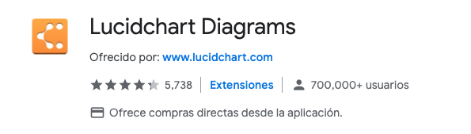
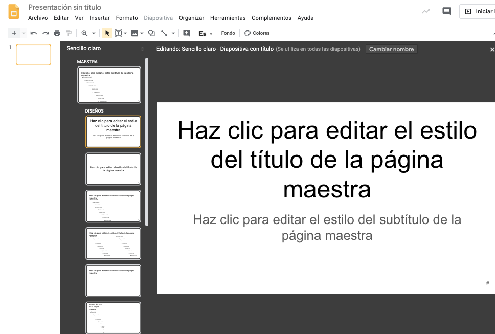
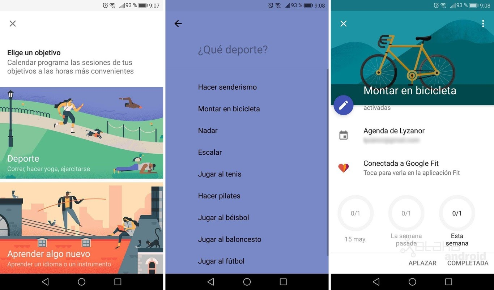
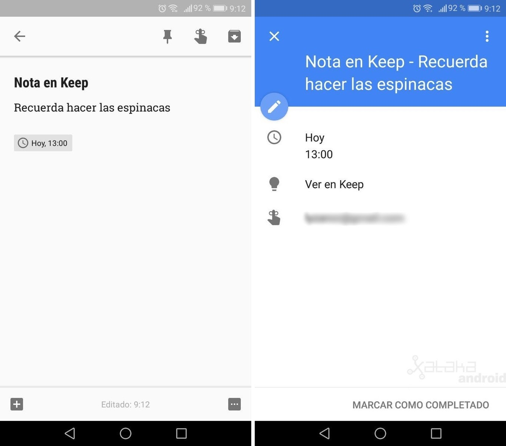
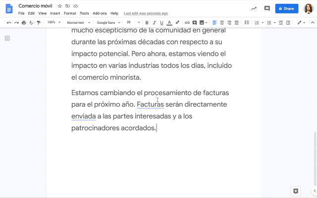

Como continuación del "Curso sobre Google Docs, Slides y Calendario (Nivel Básico)" continuamos tratando de mejorar la productividad con las herramientas de GSuite.
|
|
|


Para revisar de manera rápida y visual del trabajo realizado por cada uno de los colaboradores/estudiantes podemos utilizar la extensión AuthorViz que nos presenta un resumen por colores del trabajo realizado por cada uno.
(Actualizado 9 de junio) ya no es posible utilizar la extensión de Chrome DocuViz para generar la visualización de la revisión del historial en un documento en coautoría en Google Docs. Codifica por colores quién editó qué, cuándo y dónde. El tiempo pasa de izquierda a derecha. Las columnas de color más oscuro representan contenido de revisión; y las columnas de color más claro representan los enlaces entre columnas. Al extender la función de Historial de revisiones existente en Google Docs, DocuViz muestra todo el historial en una vista de flujo de historial en lugar de la vista de una revisión a la vez. Puede revelar la evolución del documento y los patrones de colaboración de los coautores.

Tampoco está ya disponible Draftback, que permite reproducir el historial de revisiones de cualquier documento de Google que pueda editar. Es como retroceder en el tiempo en una película. Permite detectar corta+pega masivos.

(Permaneceremos atentos a http://draftback.com/ )
Enlace: https://gsuite.google.com/marketplace/app/highlight_tool/65634221687
- Haz clic en Complementos
 Obtener complementos.
Obtener complementos. - Coloca el cursor sobre un complemento para ver una descripción breve. Para ver la descripción completa, haz clic en el complemento.
- Para instalar el complemento, haz clic en InstalarContinuar.
- Por lo general, aparecerá un mensaje en el que se solicita acceso a los datos que el complemento necesita para funcionar. Lee el mensaje y haz clic en Permitir.
- Una vez instalado el complemento, haz clic en Listo.
Insertar - > Índice
O bien desde extensión:
Puedes olvidarte de la numeración de los títulos y de dar scroll miles de veces para encontrar determinado texto, con este complemento podrás disponer de una tabla de contenidos automática que mantendrá actualizada la numeración y gracias a sus enlaces, saltar a determinada sección con un clic. Para que funcione, hace falta que el texto tenga estilos o formatos de párrafo, esto es, Título, Subtítulo, Título 1, Título 2"¦ (están junto a la tipografía).
- Abre Google Drive.
- Haz clic en
 Nuevo -> Más -> Dibujos de Google.
Nuevo -> Más -> Dibujos de Google. - Utiliza las opciones de menú y los botones para diseñar gráficos, pintar una imagen y crear diagramas de flujo y otros tipos de dibujos.
Añadir un dibujo a un documento o una presentación
- Abre Drive.
- Abre un dibujo de Google que tengas guardado.
- Selecciona todo el dibujo.
- Haz clic en Editar -> Copiar.
- Abre el documento o la diapositiva donde quieras insertar el dibujo.
- Haz clic en Editar -> Pegar.
Gliffy Diagrams
Puede ser extensión
Lucidcharts Diagrams

O complemento:
"Complementos > Gliffy Diagrams > Abrir sidebar".
Trabajar con documentos institucionales o bien documentos estándar es bastante útil emplear las plantillas de Google Docs.
Para utilizar una plantilla debe seguir los siguientes pasos:
- En un ordenador, ve a Documentos, Hojas de cálculo, Presentaciones o Formularios de Google.
- Arriba a la derecha, haz clic en Galería de plantillas.
- Haz clic en la plantilla que quieras usar.
- Se abrirá una copia de la plantilla.
Mostrar u ocultar plantillas
Si no te aparecen las plantillas puede ser que estén ocultas:
- Abre la pantalla de inicio de Documentos, Hojas de cálculo, Presentaciones o Formularios de Google.
- Arriba a la izquierda, haz clic en Menú
 Configuración.
Configuración. - Activa o desactiva Mostrar las plantillas recientes en las pantallas de inicio.
Plantillas interesantes
Hay muchos sitios en internet de donde reutilizar plantillas de muchos tipos: horarios, calendarios, como por ejemplo estas de https://www.xataka.com/basics/89-plantillas-google-docs-para-organizarlo-todo
Una manera muy práctico de generar tests o exámenes de manera rápida y realmente relacionada con el contenido a estudiar es utilizando la extensión de Google Docs denominada Doc to Form. Permite seleccionar de manera rápida contenidos de un documento de Google y convertirlos de manera automática en un Google Forms.

Añadir una nota de Keep a un documento
- En Documentos, haz clic en Herramientas > Bloc de notas de Keep.
- Arrastra una nota al documento.
- En la parte inferior del documento, haz clic en Explorar
- En el cuadro de búsqueda, introduce la información que sea relevante para tu cita (libro, autor, título del artículo, etc.).
- Haz clic en los enlaces que sean relevantes para tu tema.
- Copia el texto que desees del contenido sugerido y pégalo en tu documento.
- Consejo: Para borrar el formato de un texto, selecciónalo y haz clic en Formato > Borrar formato.
- En el documento, indica el lugar donde quieres añadir la nota a pie de página. A continuación, en los resultados de Explorar, coloca el cursor sobre la fuente que has citado y haz clic en Citar " para añadir la nota a pie de página.
Cuando escribimos un texto es bueno informarse previamente. Una de las opciones si estamos en Google Docs es utilizar la opción de Explorar que encontramos en Herramientas. Allí se detectarán los temas clave del texto y se ofrecerán imágenes, trabajos de investigación relacionados y más enlaces que podremos utilizar como bibliografía para el artículo. Toda la potencia del buscador de Google al alcance de un clic mientras estamos escribiendo.
Marcando una palabra se puede Explorar o bien buscar su definición en Definir
Podemos lograr la generación automática del PDF para el documento que queramos, solamente agregando un código a la dirección del documento.
Solamente debemos ir al botón azul de COMPARTIR

Damos click en la palabra Avanzado

En la sección de Enlace para compartir, tomamos la dirección del documento, y vemos que termina con edit/?usp=sharing

Si cambiamos esa terminación por export?format=pdf,(puedes copiar y pegar la dirección en otro lado para que la puedas editar cómodamente), tendremos listo nuestro link para compartir. Debe quedar algo parecido a esto:
https://docs.google.com/document/d/1YUG9-nkKxmg-c_W1sMRxYf01s/export?format=pdf
Si compartes el link de esa manera, Google Docs automáticamente generará un PDF para descarga, siempre con los últimos cambios que tengas hasta ese momento.
Vaya al diálogo para compartir, seleccione "obtener enlace para compartir", seleccione "cualquier persona con enlace puede ver", luego seleccione "copiar enlace".
Debería tener un enlace que se vea así:
https://docs.google.com/spreadsheets/d/<spreadsheetID>/edit?usp=sharing
Luego cambiar la última parte a / copy en lugar de / edit? Usp = sharing,
debería verse así:
https://docs.google.com/spreadsheets/d/<spreadsheetID>/copy
Use ese enlace cuando comparta y la persona con la que está compartiendo recibirá un mensaje para "hacer una copia" cuando hagan clic eso. También puede marcar ese enlace para que aparezca el mensaje "hacer una copia" si lo está utilizando para una plantilla.
------
Desde el móvil es inmediato escanear documentos y convertirlos en un PDF que se suba al Drive. Los pasos a seguir son los siguientes:
- Abre la aplicación Google Drive
 .
. - Abajo a la derecha, toca Añadir
 .
. - Toca Escanear
 .
. - Haz una foto del documento que quieras escanear.
- Ajustar el área de escaneado: toca Recortar
 .
. - Repetir la foto: toca Volver a escanear la página actual
 .
. - Escanear otra página: toca Añadir
 .
.
- Para guardar el documento terminado, toca Listo .
GOOGLE SLIDES

- Abre una presentación en Presentaciones de Google.
- En la parte superior, junto a "Iniciar presentación", haz clic en la flecha hacia abajo
 .
. - Haz clic en Vista de presentador.
- En la ventana que se abre, haz clic en Herramientas de la audiencia.
- Para iniciar una sesión nueva, haz clic en Comenzar una sesión.
- Para seguir con una sesión reciente, haz clic en Continuar con la sesión reciente.
- Para dejar de aceptar preguntas, haz clic en el interruptor para activar o desactivar esta opción en la ventana de Preguntas.
Nota: Si usas Google a través de una cuenta de tu trabajo, centro educativo u otra organización, puedes elegir qué usuarios pueden enviar preguntas:
- En la ventana "Vista de presentador", haz clic en Herramientas de la audiencia y cambia "Se aceptan preguntas de".
Mostrar preguntas de la audiencia
Los presentadores pueden mostrar preguntas de la audiencia durante una presentación.
- En "Herramientas de la audiencia", elige una pregunta que quieras mostrar.
- Haz clic en Mostrar.
Para cambiar de pregunta, elige otra y haz clic en Mostrar.
Para dejar de mostrar una pregunta, haz clic en Ocultar.
Revisar las últimas sesiones
Los presentadores pueden ver las preguntas de las sesiones recientes de Preguntas.
- Abre una presentación en Presentaciones.
- Arriba, haz clic en Herramientas Historial de Preguntas.
- Las últimas sesiones aparecen a la derecha.
Complemento de Hojas de Cálculo
Con Form Publisher , puede convertir fácilmente los envíos de Formularios de Google en Documentos de Google, Hojas de cálculo de Google o documentos PDF. Con el lanzamiento de la nueva API de Google Slides , también puede generar presentaciones de Google Slides.


Form Publisher es uno de los complementos más populares para Google Forms, y esperamos incorporar futuras mejoras de productos y API a G Suite. Ya estamos planeando permitir que los usuarios carguen imágenes a través de Formularios de Google para agregarlas directamente a su presentación de Presentaciones de Google, pero estén atentos para más información.
Más ayuda sobre Slides: https://support.google.com/docs/topic/9052835?hl=es&ref_topic=1382883
CALENDARIO
cal.new
Con la aplicación Google Calendar no puedes añadir los calendarios de otras personas. No obstante, si añades los calendarios con el ordenador, los verás en la aplicación.
- Abre Google Calendar en un ordenador.
- A la izquierda, en "Añadir el calendario de un amigo", escribe el nombre o la dirección de correo de la persona cuyo calendario quieres ver.
- Selecciona su nombre.
- Si ha compartido el calendario públicamente o con tu organización, verás sus eventos en tu calendario.
- Si no ha compartido su calendario públicamente, puedes escribirle para pedirle que lo comparta contigo. En cuanto lo comparta, recibirás un correo.
Al mirar más de un calendario a la vez, se mostrarán las agendas de ambas personas lado a lado.
Consejo: Si quieres mostrar u ocultar su calendario, haz clic en el nombre de esa persona en el apartado "Otros calendarios".
Si una persona ha compartido su calendario contigo, o si pertenece a tu organización, puedes saber si está libre u ocupada cuando la añades a un evento.
- Abre Google Calendar en un ordenador.
- En la parte inferior derecha, haz clic en Crear evento .
- En el cuadro "Añadir invitados", escribe el nombre o la dirección de correo electrónico de la persona a la que quieras invitar.
- Debajo de "Invitados", haz clic en Sugerencias de horas. Si el invitado ha compartido su calendario contigo, verás en qué horario podría asistir.

Puedes configurar un bloque para citas en tu calendario para que otros usuarios las reserven. Por ejemplo, los profesores pueden invitar a sus alumnos a que reserven horas durante el horario de tutorías de la semana.
Las horas disponibles son útiles cuando no sabes quién puede necesitar reunirse contigo, pero quieres estar disponible. Puedes ofrecer un bloque de tiempo en tu calendario para que otras personas reserven horas dentro de ese bloque. Por ejemplo, puedes reservarte dos horas para mantener reuniones de 30 minutos, y otras personas pueden reservar después uno de los periodos de 30 minutos a la hora que mejor les venga.

Crear y compartir horas disponibles
¿Qué relación hay entre las horas disponibles y los eventos normales?
Crear un bloque para citas
- En un ordenador, abre Google Calendar con tu cuenta del trabajo o de tu centro educativo.
- Asegúrate de tener abierta la vista Semana o una de Día.
- Haz clic en cualquier parte del calendario. En la ventana de evento que aparece, haz clic en Horas disponibles.
- Escribe los detalles (título incluido) y elige el calendario en el que quieres mostrar el evento.
- Si quieres añadir más información, como una ubicación o descripción, haz clic en Más opciones.
Nota: Si quieres que el bloque para citas se repita, hazlo antes de invitar a otras personas a que reserven una hora. Cuando haces que se repita un bloque para citas que ya tiene horas reservadas, estas horas se duplican, lo que puede dar lugar a una doble reserva. Cómo hacer que se repita un evento
Añadir invitados al bloque para citas
Cuando añades un invitado al bloque para citas, el invitado se añade a todas las horas disponibles del bloque y recibe un correo electrónico cada vez que alguien reserva una cita. Por ejemplo, un profesor puede añadir a su asistente como invitado para que esté presente durante el horario de tutorías.
Para añadir invitados a un bloque para citas, abre el evento de la cita y haz clic en Añadir invitados.
Nota: No añadas a personas que quieran reservar una hora disponible individual. En su lugar, envíales un enlace a la página de citas.
Invitar a otros usuarios a reservar una hora disponible
Después de configurar el bloque para citas, puedes enviar a otras personas un enlace a tu página de citas para invitarles a que reserven una hora.
- Abre Google Calendar.
- Haz clic en tu cita Ir a la página de citas de este calendario.
- Copia y pega el enlace de la página de citas de tu navegador.
- Envía este enlace a los usuarios que quieran reservar una hora disponible.
Nota: Las personas que quieran reservar tus horas disponibles pueden hacerlo con Google Calendar. Si es necesario, pueden crear una cuenta de Google para empezar.
Reservar una hora disponible
- Haz clic en el enlace de la página de citas. Encontrarás el enlace en un correo electrónico, mensaje o evento de calendario que se haya compartido contigo.
- Haz clic en una hora disponible Guardar.
Cancelar una hora disponible
- Abre Google Calendar.
- Haz clic en la hora disponible.
- En "¿Asistirás?", haz clic en No.
En los tres puntos del evento
Gmail - tareas - calendar
Gmail - eventos
Meet - contenidos

Estos eventos se sincronizarán con Google Fit para que el calendario detecte si se ha finalizado el ejercicio durante la semana y marcar la meta como completada.
Al añadir ubicación a los eventos los recordatorios del móvil cuentan con distancia y tráfico.

Otra forma de crear eventos es a través del resto de aplicaciones de Google. Si abrimos Keep y creamos una nota con una fecha concreta nos aparecerá su evento correspondiente en Calendar
Editar en el calendario desde panel lateral (11 de junio de 2020)
Ahora puede editar los eventos del calendario de Google en el panel lateral de acceso rápido en Gmail y Docs, sin tener que ir a la página de calendario completos en su navegador. Incluso puede utilizar "Ver disponibilidad" para ver la disponibilidad del calendario de los demás cuando la programación de eventos.
Sugerencias gramaticales en Docs y Gmail (24 de junio)
Se ha comenzado a implementar las sugerencias gramaticales basadas en redes neuronales a medida que se escribe en español (en inglés ya estaba).
El idioma se detectará automáticamente, e incluso si cambia entre escribir en español e inglés, se proporciona las sugerencias gramaticales adecuadas. Estas capacidades pueden ayudar a escribir más rápido y con mayor precisión.
